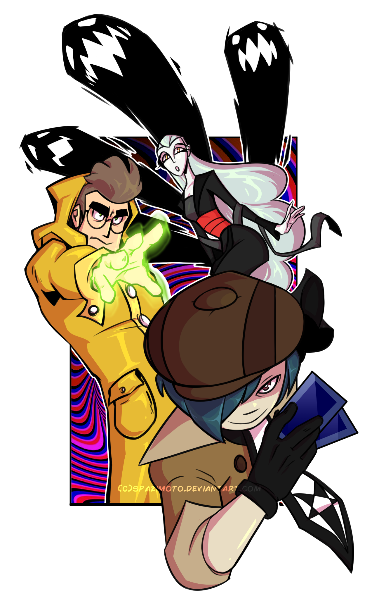
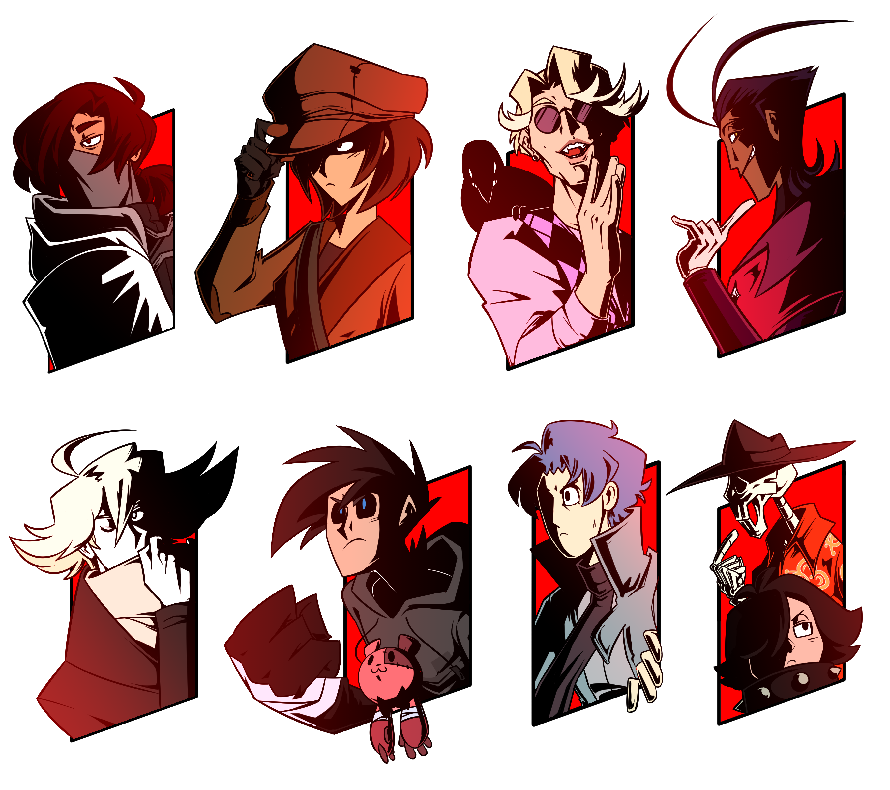
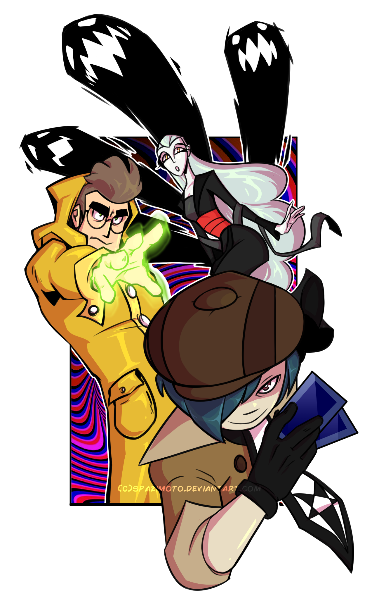
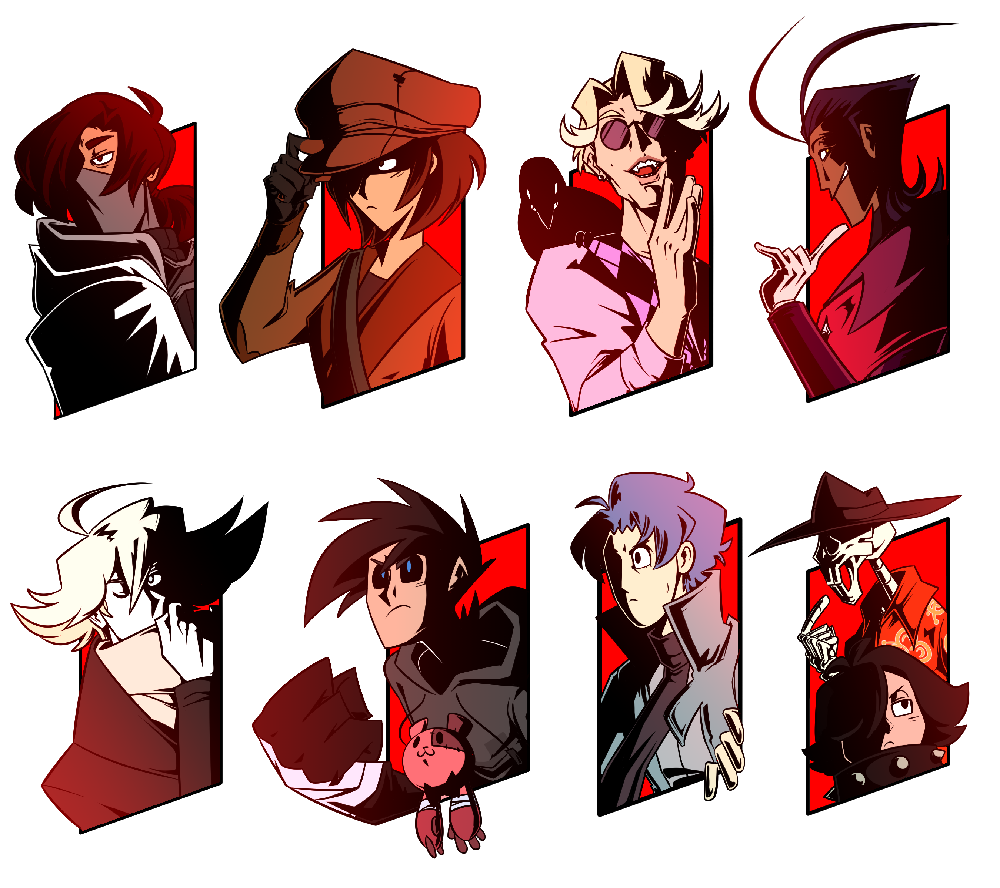

Morgan DeMunck is an undergraduate Digital Media student attending Seminole State College in Florida. She specializes in digital illustration and character design, displaying a wide array of visual designing skills that is perfect for any creative project, no matter the content. Her illustrative skills are geared towards making layouts feel both friendly and accessible to first time and veteran users alike. Morgan has been involved in the visual arts field for over a decade now, and has worked on a slew of projects ranging from personal and professional comic development.